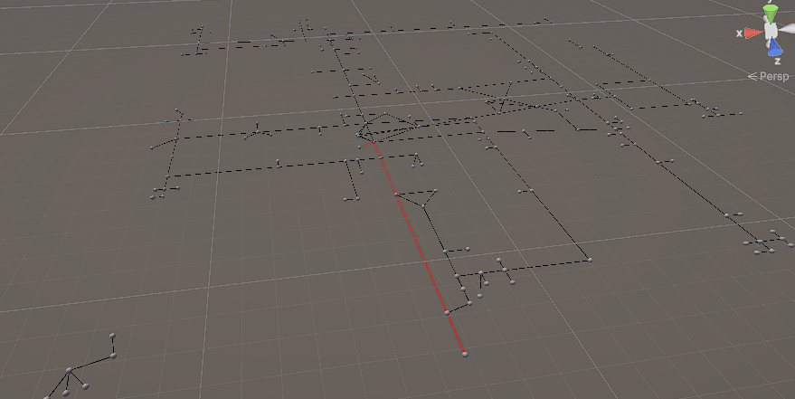
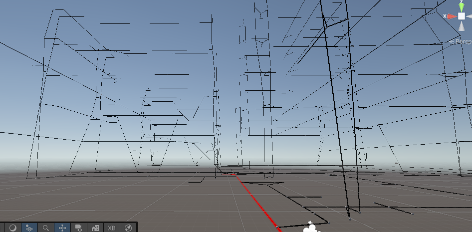
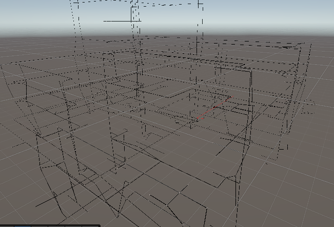
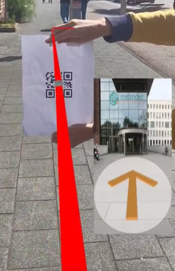
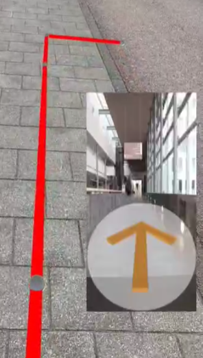

AR Wayfinding System
The AR Wayfinding project is an indoor navigation system for hospitals using Augmented Reality. It guides users to destinations through AR overlays on mobile devices and provides step-by-step directions inside complex buildings.
Project Context & Goal
Large hospitals can be confusing to navigate. The goal was to create a system that helps visitors, patients, and staff find their way indoors, improving efficiency and reducing stress.
I developed the system as a prototype using Unity, AR Foundation, and QR code tracking. Floors are mapped with images, routes calculated via Dijkstra’s algorithm, and destinations aligned in AR for accurate navigation.
My Role in the Project
- Developed the AR navigation system using Unity & AR Foundation
- Integrated QR code tracking for positioning and route alignment
- Implemented Dijkstra’s algorithm for shortest-path calculations
- Designed user interface and AR overlays
- Tested tracking accuracy and user experience in hospital-like environments
Skills Demonstrated
- Unity development for AR applications
- AR Foundation & QR code tracking
- Pathfinding algorithms (Dijkstra)
- Indoor mapping & coordinate systems
- UX/UI design for AR navigation
- Testing & iteration in AR environments
- Problem-solving in technical constraints
System Features
- Indoor mapping with multiple floors and floor-specific navigation
- Destination points, junctions, and elevator navigation
- Real-time shortest path calculation
- AR overlay guidance on mobile device camera
- QR codes used for accurate positioning and calibration
Reflection & Learning Outcomes
This project gave me experience in designing AR systems for real-world use cases and understanding indoor navigation challenges. I learned:
- How to integrate AR with real-world maps and coordinate systems
- Challenges of accurate AR tracking indoors using QR codes
- The importance of user-friendly interface design in AR
- Collaboration between hardware mapping and software route calculation
Project Images
Click images to enlarge





